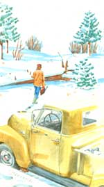

Safety, Selection, Milling, and More!
Chain Saw Safety
Chain Saw Sense
Chain Saw Lumber Mill
Chain Saw Mini-Mills
Chain Saw Skills
The morning is crisp and clear, the air electric. The ,old quickens my pace as I crunch through the snow on my way out to the old pickup. I load chain saw, gas, oil, and an ax into the bed, then jump into the cab and crank 'er over. While she warms, I dart back into the kitchen for another cup-with Mama on my lap for a little morning lovin'. Then it's outside again, pulling on mittens as I go ...
... down the icy road, alive with anticipation. It's midwinter and time to make amends for a lazy summer and fall, and Mama has spoken: "Get more wood." Out past the farms and toward the Bureau of Land Management land, with pinon and juniper everywhere. Cross the rickety bridge and ease to a stop. Out of the warm truck, on with the tire chains ...back in, and down the slope through deep, untraveled morning snow.
Look at that big old pinon over yonder. Quick, turn in right here! Out for a closer look. Yeah, this is the tree for me. Probably half a load of spicy-smelling firewood in that one giant snag ...dead and down, and no sign of nests or holes. (Sure don't want to cut up anybody's winter home.)
Grab the saw. Check 'er over-gas, oil, chain tension-lookin' good. Start 'er up, warm 'er up. Just look at the size of that old tree; must have been here when Washington was just a pup! Heft the growling, shark-toothed saw and bite into that log ...seven thousand revs a minute ...half a mile of chain over the bar every sixty seconds ...plowing through ancient wood, smoking through resin so old and hard it's almost petrified. Saw-chips flying up and back in a graceful arc, then lining themselves out on the snow behind me.
Cut it up, load it up. Cut some more. Shut the saw off and stand knee-deep in fresh snow. Silence. Ahhh. The best part of a good morning-the quiet when the work is done. Just the slow tick, tick of cooling metal amid the stillness of a forest in winter.
Look! A hawk tracing slow circles across a steel blue sky. Searching for a meal, probably ...or watching me.
Back into the truck. Start 'er up, warm 'er up. Hit the road for home. An obsolete Chevy workhorse with two thousand pounds of conifer riding on her strong back, every spring groaning, creaking ...rolling home to the warmth of a wood-heated kitchen, and Mama on my lap.
|
 |
|
|